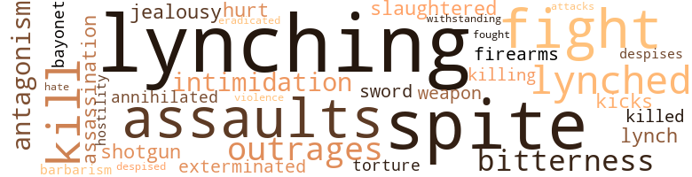
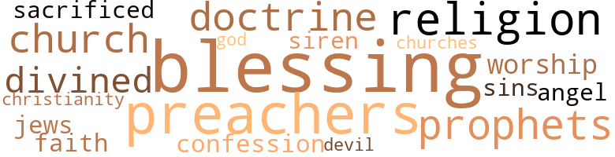

Light Ahead for the Negro, by Johnson, Edward Augustus (1975)
21 music-related terms matched in this text.
Most frequent terms in this topic: songs (3); line (3); section (2); phrase (2); song (1)
clipping.n.01
Definition: an excerpt cut from a newspaper or magazine
| word | sentence |
|---|---|
| clippings | ( The two clippings below occurred in the same issue of a Southern paper and showed how , while the North was mobbing a Negro , the South was honoring one . ) |
dance.v.03
Definition: skip, leap, or move up and down or sideways
| word | sentence |
|---|---|
| dance | No task was too menial , if done for a white master - he would dance if he was called upon and make sport of the other Negroes , and even pray , if need be , so he could laugh at him . |
excerpt.n.01
Definition: a passage selected from a larger work
| word | sentence |
|---|---|
| excerpts | Signifying to his secretary what he wanted , he read to me the following excerpts from the history of those times : " NEGRO DISFRANCHISEMENT " What Dr. F. A. Noble thinks " In civil as in business affairs there is nothing so foolish as injustice and oppression ; there is nothing so wise as righteousness . |
music.n.01
Definition: an artistic form of auditory communication incorporating instrumental or vocal tones in a structured and continuous manner
| word | sentence |
|---|---|
| music | I am really fond of these people and the happiest moments of my life are spent with them - they are of a different temperament from us , so mild and good na-tured , - so complacent and happy in their religious worship and their music is simply enchanting ! |
musical_instrument.n.01
Definition: any of various devices or contrivances that can be used to produce musical tones or sounds
| word | sentence |
|---|---|
| instruments | My friend picked his way through a tangled mass of machinery to the instruments . |
phrase.n.02
Definition: a short musical passage
| word | sentence |
|---|---|
| phrase | The Negro farmer knew little about what was going on ; he was making corn and cotton , and to tell him in public assemblies would be considered ' incendiary , ' and ' stirring up strife between the races , ' and the individual who might be thus charged would certainly have to leave ' be - ' tween two suns , ' as the phrase was . |
| phrase | It was a pet phrase in my time for certain communities to say to the Negro that they " would protect him in his rights , " but what the Negro wanted was that he should not have to be protected at all ! |
section.n.01
Definition: a self-contained part of a larger composition (written or musical)
| word | sentence |
|---|---|
| section | The South ought to have thanked the Negro preachers and the Negro school teachers for the reign of peace in that section , because it was due almost wholly to their efforts . |
| section | But there is a large , influential and growing group of Southern men , loyal to their section , equally loyal to the nation , open-minded and high-minded , who are eager to give the South a new policy , to rid it of sectionalism , to organize its spiritual , moral and intellectual forces , to develop education , and to treat great questions from a national rather than from a sectional point of view ; men like Governor Aycock , of North Carolina , and Governor Montague , of Virginia . |
sing.v.02
Definition: produce tones with the voice
| word | sentence |
|---|---|
| sing | - Do n't you like to hear them sing , Mr. Twitchell ? " |
singing.n.01
Definition: the act of singing vocal music
| word | sentence |
|---|---|
| singing | " I remarked that I was very fond of their singing , and that I had been delighted with a visit I had recently made to the Dvorak Conservatory , where the Negro 's musical talent seemed to have been miraculously developed . |
song.n.01
Definition: a short musical composition with words
| word | sentence |
|---|---|
| songs | Some one has said , ' Let me write the songs of a people and I will control their religious sentiments . ' |
| songs | It will not do , however , to listen to the siren of commercialism whose songs are composed by advocates of Negro disfranchisement . |
| song | There is method in the spell she would bring upon you , and her story is literally nothing but a song . |
| songs | One evening , however , she seated herself by my side on the veranda and amid the fragrance of the flowers and the songs of the birds we had an hour alone which passed so swiftly that it seemed but a moment . |
tune.n.01
Definition: a succession of notes forming a distinctive sequence
| word | sentence |
|---|---|
| line | Let the white man determine that no man shall by act or thought or speech cross this line , and the race problem will be at an end . " |
| line | I remarked that I used to wonder why this could not be done with the young Negroes coming out from such schools - since their ante-bellum fathers were so successful in this line - and I further said that this movement might have been inaugurated in my day , but for the opposition of the politicians , who approached the Negro question generally with no sincere desire to get effective results , but to make political capital for themselves . |
| line | Day after day long files of these sons of Africa stood in line waiting with their ' quarters ' in hand to renew their vows to the wife of their youth . |
| lines | " The state is suffering because of its criminal class both white and black , and it will continue to do so until this cloud is removed , and in undertaking the education of its citizens , the state is not working for the farmers especially ( as some seem to imply by their arguments on this subject ) but for a higher type of citizenship along all lines . |
| tunes | What tunes indeed may " mere man " play on such heart-strings ! |
whistle.v.01
Definition: make whistling sounds
| word | sentence |
|---|---|
| whistle | It was paying too much for a whistle of that quality . |
56 violence-related terms matched in this text.
Most frequent terms in this topic: lynching (6); spite (5); assaults (3); intimidation (2); bitterness (2)
attack.v.02
Definition: attack in speech or writing
| word | sentence |
|---|---|
| attacks | If his disease is of a more malignant type than ordinary when it attacks him , then the more heroic should be the remedy . |
bayonet.n.01
Definition: a knife that can be fixed to the end of a rifle and used as a weapon
| word | sentence |
|---|---|
| bayonet | The government 's plans were carried finally at the point of the bayonet , when they might have gone through smoothly , had the Negro 's call for Southern leadership been heeded . |
brutality.n.02
Definition: a brutal barbarous savage act
| word | sentence |
|---|---|
| barbarism | I will not discuss here the moral aspect of the question whether A may deprive B of his rights if A thinks it in his own interest to do so , and the further question , whether the general admission of such a principle would not banish justice from the earth and eventually carry human society back into barbarism . |
bullying.n.01
Definition: the act of intimidating a weaker person to make them do something
| word | sentence |
|---|---|
| intimidation | " Such acts as these spread terror among the Negro population , as well as bad feeling , and dug a wide political pit between the Negro and the Democratic party which organized these methods of intimidation . |
| intimidation | To secure these amendments in other states , fraud and intimidation is alleged to have been used , and the Southern states that have not amended their constitutions have effected the same results by a system of political jugglery with the Negro 's ballots . |
butcher.v.01
Definition: kill (animals) usually for food consumption
| word | sentence |
|---|---|
| slaughtered | " Bishop Turner , senior bishop of the African Methodist-Episcopal Church , one of the leading organizations of the Negro race , also advocated emigration to Africa as the only solution of the problem , on the grounds that the white people would never treat the Negro justly and that history furnished no instance where a slave race had ever become absolutely free in the land of its former owners , instancing that to be free the Jews had to leave Egypt ; that William the Conqueror and his followers slaughtered the native Britons , rather than attempt to carry out what seemed to them an impossible task , that of teaching two races , a conquered race and a conquering one , to live side by side in peace . |
character_assassination.n.01
Definition: an attack intended to ruin someone's reputation
| word | sentence |
|---|---|
| assassination | " Like Lincoln 's emancipation proclamation , this wholesale assassination of Negro character in the newspapers was strictly a political ' war measure , ' intended for political use only . |
contemn.v.01
Definition: look down on with disdain
| word | sentence |
|---|---|
| despises | In saying this I would not be understood as indulging in that sickly sentimentality which despises all rich people simply because they are rich , but rather to condemn the illegitimate use of riches . |
| despised | The much despised Yankee has taught the South many lessons in industry , in the arts , sciences and literature , but none more valuable to her than to forsake her prejudice against the evolution of the Negro . |
defy.v.01
Definition: resist or confront with resistance
| word | sentence |
|---|---|
| withstanding | By withstanding the mob ; by upholding the law ; by ridding themselves of the silly dread of ' social equality ' ; by contending for Negro education of the broadest sort ; by hailing every step upward which the black man may take ; by insisting upon the equality of all men before the law , they can , Mr. Schurz argues forcibly , do much to save the South and the country from the disgrace and calamity of a new slavery . |
eliminate.v.03
Definition: kill in large numbers
| word | sentence |
|---|---|
| annihilated | The ' Ku Klux Klan ' was finally annihilated by the strong hand of President Grant , who filled the South with sufficient militia to suppress it . |
| eradicated | I replied that it was commercialism that fixed slavery in the nation and rooted and grounded it so deep that scarcely could it be eradicated without destroying the nation itself . |
exterminate.v.01
Definition: kill en masse; kill on a large scale; kill many
| word | sentence |
|---|---|
| exterminated | Had he been resentful and vindictive , like the Indian , he would have been deported or exterminated long since . |
fight.n.05
Definition: a boxing or wrestling match
| word | sentence |
|---|---|
| Fights | Fights between three white men and two Negroes were published , under glaring headlines , as ' Race Riots . ' |
| fight | The friends of the Negro had this question to battle with from the beginning , for the enemies of the race used every weapon at hand in the long and terrible fight against Negro citizenship . |
fight.v.02
Definition: fight against or resist strongly
| word | sentence |
|---|---|
| fight | The Negro took his cue in matters of race policy from his white friends - he did not fight until the signal was given by them . |
| fought | We visited McPherson 's monument , and standing with head uncovered in its shadow , I said that I was glad to see that the cause he fought for was recognized as a blessing to the South as well as to the North . |
firearm.n.01
Definition: a portable gun
| word | sentence |
|---|---|
| firearms | Some of them were that a Negro should not own land , that a Negro 's testimony was incompetent in the courts , that a Negro should not keep firearms for his defense , that he should not engage in business without paying a high and almost prohibitive tax , that he must hire himself out on a farm in January or be sold to the highest bidder for a year , the former owner to have the preference in bidding . |
hate.n.01
Definition: the emotion of intense dislike; a feeling of dislike so strong that it demands action
| word | sentence |
|---|---|
| hate | The Negroes , who withal had rather love than hate white people , are generally thankful for all expressions favorable to themselves . |
hostility.n.01
Definition: a hostile (very unfriendly) disposition
| word | sentence |
|---|---|
| hostility | Negro education is looked upon with increasing hostility . |
hostility.n.02
Definition: a state of deep-seated ill-will
| word | sentence |
|---|---|
| antagonism | It is race antagonism , and that race antagonism presents a problem more complicated and perplexing than most others , because it is apt to be unreasoning . |
| antagonism | It is race antagonism , and that race antagonism presents a problem more complicated and perplexing than most others , because it is apt to be unreasoning . |
indignation.n.01
Definition: a feeling of righteous anger
| word | sentence |
|---|---|
| outrages | " ' Why did not the Negro offer some resistance to these outrages ? ' |
| outrages | But in carrying out this scheme they often met resistance , whereupon many outrages were perpetrated upon people who made a stand for their rights under the law of the land . |
injury.n.01
Definition: any physical damage to the body caused by violence or accident or fracture etc.
| word | sentence |
|---|---|
| hurt | This was a fact that hurt , regardless of who was responsible for it . |
jealousy.n.01
Definition: a feeling of jealous envy (especially of a rival)
| word | sentence |
|---|---|
| jealousy | This was one of the fruits of slavery , which encouraged jealousy and bickering . |
kick_back.v.02
Definition: spring back, as from a forceful thrust
| word | sentence |
|---|---|
| kicks | He had a smile for his frowns and a grin for his kicks . |
kill.v.10
Definition: cause the death of, without intention
| word | sentence |
|---|---|
| kill | Your organization for the dissemination of news has it in its power to either kill or make alive in this respect . |
| killing | In obstinate cases and toward the end of their careers " klans " would visit Negro cabins at night and terrify the inmates by whipping them , hanging them up by their thumbs , and sometimes killing them . |
| killed | " The story was told of one case where a white man named Stephens , the recognized political leader of the Negroes as well as a few whites , in one of the states , was invited into one of the lower rooms of the courthouse of his county while a political meeting by his opponents was in progress above , and there told he must agree to leave the county and quit politics or be killed then and there . |
| kill | The shock of one answer might kill me . |
lynch.v.01
Definition: kill without legal sanction
| word | sentence |
|---|---|
| lynched | Then , too , he had been told that the Yankees would not treat him like the Southerner , and Southern newspapers took especial pains to publish full details of all the lynchings that occurred in the North and make suggestive comments on them , in which they endeavored to show that the whole country was down on the Negro , and that while in the South the whites lynched only the one Negro against whom they had become enraged , in the North they mobbed and sought to drive out all the Negroes in the community where the crime had been committed . |
| lynched | In some states laws were passed giving damages to the widows of those who were lynched by mobs , said damages to be paid by the county in which the lynching occurred . |
| lynching | " The subject of lynching became very serious . |
| lynch | " At first it was confined to criminals who committed assaults on women , and to brutal murderers , but it soon became customary to lynch for the slightest offense , so that no man 's life was safe if he was unfortunate enough to have had a difficulty with some individual , who had friends enough to raise a mob at night who would go with him to the house of his victim , call him out , and either shoot , or unmercifully beat him . |
| lynching | " The method of lynching Negroes was usually by hanging or by burning at the stake , sometimes in the presence of thousands of people , who came in on excursion trains to see the sight , and , possibly , carry off a trophy consisting of a finger joint , a tooth or a portion of the victim 's heart . |
lynching.n.01
Definition: putting a person to death by mob action without due process of law
| word | sentence |
|---|---|
| lynchings | Then , too , he had been told that the Yankees would not treat him like the Southerner , and Southern newspapers took especial pains to publish full details of all the lynchings that occurred in the North and make suggestive comments on them , in which they endeavored to show that the whole country was down on the Negro , and that while in the South the whites lynched only the one Negro against whom they had become enraged , in the North they mobbed and sought to drive out all the Negroes in the community where the crime had been committed . |
| lynching | In some states laws were passed giving damages to the widows of those who were lynched by mobs , said damages to be paid by the county in which the lynching occurred . |
| lynching | While Negroes were the most common victims , yet the fever spread like a contagion to the lynching of white criminals as well . |
| lynching | If the lynching was for a crime committed against a woman , and she could be secured , she was consigned to the task of starting the flames with her own hands . |
| lynching | " If the question of lynching had been confined to Negroes guilty of assaults on females some justification might exist , but it has been extended to all crimes ; and not satisfied with hanging , burning by slow fire has been substituted , accompanied by stabbing , the cutting off of finger joints , the digging out of eyes , and other torture . |
malice.n.01
Definition: feeling a need to see others suffer
| word | sentence |
|---|---|
| spite | They carried the horses to the woods and hid them in the densest swamps , they buried the jewelry and silver and gold plate ; they secreted their young mistresses and the members of the family where they could not be found , and not one instance was there ever heard of improper conduct , out of a population of nearly four million slaves ; in spite of the fact that the war was being maintained by their masters for the perpetuation of the shackles of slavery on themselves ! |
| spite | Forty years after emancipation - about as long as Moses was in the wilderness - in spite of these false prophecies , we can now find some of the sons of the prophets fearing and foretelling , not that the Negroes will perish , but that they will outstrip them in the race of life ! |
| spite | It is a happy realization for me to return to my country and find these questions peaceably adjusted and that the South , which was for a long time considered obdurate on this subject , has led in bringing about this happy solution , in spite of the prophecies of many writers like this one . |
| spite | But the delicious air , the strength-giving light revived me in spite of myself . |
| spite | Through this fatal blunder on his part , their manufacture and their use became world-wide , almost at once , in spite of countless legal attempts to limit the production , in order to keep up the cost . |
rape.n.03
Definition: the crime of forcing a woman to submit to sexual intercourse against her will
| word | sentence |
|---|---|
| assaults | " At first it was confined to criminals who committed assaults on women , and to brutal murderers , but it soon became customary to lynch for the slightest offense , so that no man 's life was safe if he was unfortunate enough to have had a difficulty with some individual , who had friends enough to raise a mob at night who would go with him to the house of his victim , call him out , and either shoot , or unmercifully beat him . |
| assaults | " If the question of lynching had been confined to Negroes guilty of assaults on females some justification might exist , but it has been extended to all crimes ; and not satisfied with hanging , burning by slow fire has been substituted , accompanied by stabbing , the cutting off of finger joints , the digging out of eyes , and other torture . |
| assaults | God made them sincere , it may be said , but few there are that stand the test of time , and the assaults of a persistent man 's devotion . |
resentment.n.01
Definition: a feeling of deep and bitter anger and ill-will
| word | sentence |
|---|---|
| bitterness | Here is where the bitterness , which for a long time seemed to curse our country , had its origin . |
| bitterness | If the Negro was becoming vicious to a large extent , and the cause of it was the intensity of race prejudice in the land , which confined him to menial callings , and only a limited number of those ; and race prejudice could not be well prevented owing to the misconception of things by those who fostered it ; and if an attempt at suppression would mean more bitterness toward the Negro and danger to the country , then surely , looking at the question from the distance at which we are today , the best solution was the one adopted by our bureaus at the time . |
shotgun.n.01
Definition: firearm that is a double-barreled smoothbore shoulder weapon for firing shot at short ranges
| word | sentence |
|---|---|
| shotgun | " So that - with the News Bureau making capital every morning of the corruption in the race ; with the efforts of Southern ministers who had taken charge of Northern pulpits , to strew seeds of poison by proclaiming , on the commission of every offense by a Negro , ' We told you that the Negro was not worth the freedom you gave him , ' ' We told you he was n't fit for citizenship and that the money you have spent for his education is worse than wasted ; ' with the constant assertions that his only place is ' behind a mule , ' that education made him a greater criminal , that ' the Southern people are his best friends ' because ' we overlook his follies ' and ' treat him kindly if he will stay in his place ; ' with the money interests clamoring for the South ' to be let alone ' with the Negro question , for fear of unsettling business and causing a slump in Southern securities ; with the claims that , to keep the railroads earning dividends , to keep the cotton market active , the Negro must be handled according to the serfdom or shotgun plan , and that the best task master so far found was the Southern white man , who had proven himself wonderfully adept in getting good crops from Negro labor - with these and many other excuses , the question of raising the Negro in the scale of civilization was left to posterity . |
sword.n.01
Definition: a cutting or thrusting weapon that has a long metal blade and a hilt with a hand guard
| word | sentence |
|---|---|
| sword | He bore the treasured watch , or ring , or sword , of the fallen soldier , and broke the sad news to the family and there were black tears as well as white ones spilled on such occasions . |
torment.v.01
Definition: torment emotionally or mentally
| word | sentence |
|---|---|
| torture | " If the question of lynching had been confined to Negroes guilty of assaults on females some justification might exist , but it has been extended to all crimes ; and not satisfied with hanging , burning by slow fire has been substituted , accompanied by stabbing , the cutting off of finger joints , the digging out of eyes , and other torture . |
violence.n.01
Definition: an act of aggression (as one against a person who resists)
| word | sentence |
|---|---|
| violence | It is , first , as far as possible , under the Fifteenth Amendment , to disfranchise him ; after that , let him alone ; quit writing about him ; quit talking about him ; quit making him ' the white man 's burden ' ; let him i tote his own skillet ' ; quit coddling him ; let him learn that no man , no race , ever got anything worth the having that he did not himself earn ; that character is the outcome of sacrifice , and worth is the result of toil ; that , whatever his future may be , the present has in it for him nothing that is not the product of industry , thrift , obedience to law and uprightness ; that he can not , by resolution of council or league , accomplish anything ; that he can do much by work ; that violence may gratify his passions , but it can not accomplish his ambition ; that he may rarely eat of the cooking equality , but he will always find when he does that there is death in the pot . |
weapon.n.01
Definition: any instrument or instrumentality used in fighting or hunting
| word | sentence |
|---|---|
| weapon | The friends of the Negro had this question to battle with from the beginning , for the enemies of the race used every weapon at hand in the long and terrible fight against Negro citizenship . |
27 religion-related terms matched in this text.
Most frequent terms in this topic: blessing (3); religion (2); divined (2); preachers (2); prophets (2)
blessing.n.05
Definition: the act of praying for divine protection
| word | sentence |
|---|---|
| blessing | The Southern people began to recognize the difference , and soon became the firm champions of the new system , and welcomed the new efforts of the labor unions as a blessing rather than a curse . " |
| blessing | A rich man can be a blessing as well as a curse to his community , and I am indeed happy to learn and see for myself that this is now the rule , rather than the exception , as formerly . |
| blessing | We visited McPherson 's monument , and standing with head uncovered in its shadow , I said that I was glad to see that the cause he fought for was recognized as a blessing to the South as well as to the North . |
christendom.n.01
Definition: the collective body of Christians throughout the world and history (found predominantly in Europe and the Americas and Australia)
| word | sentence |
|---|---|
| Christianity | She seemed to be ashamed of the ideas once advocated by these men , and charitably dismissed them with the remark that , " It would have been better for the cause of true Christianity had they never been listened to by so large a number of our people , as they represented brute force rather than the Golden Rule . " |
church.n.02
Definition: a place for public (especially Christian) worship
| word | sentence |
|---|---|
| church | Nothing has done more to facilitate a happy solution of the so-called Negro problem of the past than they , and their history is a most fascinating story , as it pictures their origin by a a young Southern heroine of wealth and standing with philanthropic motives , who while on her way to church one Sunday morning was moved by the sight of a couple of barefooted Negro children playing in the street . |
| churches | " This vicious element in the race is a constant subject of discussion in Negro churches and in private conversation . |
church.n.04
Definition: the body of people who attend or belong to a particular local church
| word | sentence |
|---|---|
| Church | Quite a number went to Africa - and Bishop Smith of the African Methodist Church induced many to go to Hayti . |
confession.n.05
Definition: the document that spells out the belief system of a given church (especially the Reformation churches of the 16th century)
| word | sentence |
|---|---|
| confession | That is the only question with which we are concerned , was the ruling thought , if not the open confession . |
divine.v.01
Definition: perceive intuitively or through some inexplicable perceptive powers
| word | sentence |
|---|---|
| divined | For full five minutes I sat there , staring , before starting over to look at it ; for though I knew not who I was , and though I had passed through only two rooms of the house , and had met only one person , I had divined the truth a thousand times . |
| divined | I really believe that he refused to allow you to be taken to the City Hospital when you were found on his lawn because he almost divined that you might have a message from another age for him on that subject . |
doctrine.n.01
Definition: a belief (or system of beliefs) accepted as authoritative by some group or school
| word | sentence |
|---|---|
| doctrines | While the enemies of liberty have always been cunning , yet like all other advocates of false doctrines who get power , they usually abuse it ; the South might have held her slaves for many years longer , had she not overstepped the mark by trying to force the institution on the North . |
| doctrine | In their doctrine all Negroes are to be humiliated . |
god.n.03
Definition: a man of such superior qualities that he seems like a deity to other people
| word | sentence |
|---|---|
| God | God made them sincere , it may be said , but few there are that stand the test of time , and the assaults of a persistent man 's devotion . |
jew.n.01
Definition: a person belonging to the worldwide group claiming descent from Jacob (or converted to it) and connected by cultural or religious ties
| word | sentence |
|---|---|
| Jews | " Bishop Turner , senior bishop of the African Methodist-Episcopal Church , one of the leading organizations of the Negro race , also advocated emigration to Africa as the only solution of the problem , on the grounds that the white people would never treat the Negro justly and that history furnished no instance where a slave race had ever become absolutely free in the land of its former owners , instancing that to be free the Jews had to leave Egypt ; that William the Conqueror and his followers slaughtered the native Britons , rather than attempt to carry out what seemed to them an impossible task , that of teaching two races , a conquered race and a conquering one , to live side by side in peace . |
preacher.n.01
Definition: someone whose occupation is preaching the gospel
| word | sentence |
|---|---|
| preachers | The South ought to have thanked the Negro preachers and the Negro school teachers for the reign of peace in that section , because it was due almost wholly to their efforts . |
| preachers | Death rate ..................... 20 per M ... 5 per M. A. D. 1900 A. D. 2004 Number of lawyers ....................................................................... 250 .................................................................. 5,282 Number of doctors ....................................................................... 800 .... 11,823 Number of pharmacists ................................................................... 150 .... 2,111 Number of teachers ..................................................................................................... 30,000 .... 200,603 Number of preachers ......................................................................... 75,000 .... 250,804 Number of mechanics ..................................................................................................... 80,000 .... 240,922 I noticed that Negroes had gained standing in the country as citizens and were no longer objects for such protection as the whites thought a Negro deserved . |
prophet.n.02
Definition: someone who speaks by divine inspiration; someone who is an interpreter of the will of God
| word | sentence |
|---|---|
| prophets | Forty years after emancipation - about as long as Moses was in the wilderness - in spite of these false prophecies , we can now find some of the sons of the prophets fearing and foretelling , not that the Negroes will perish , but that they will outstrip them in the race of life ! |
| prophets | She also had heard of those false prophets whom history had not forgotten , but who lived only in ridicule and as examples of error . |
religion.n.01
Definition: a strong belief in a supernatural power or powers that control human destiny
| word | sentence |
|---|---|
| faith | This problem tested our faith as with fire . " |
| religion | He was taught religion to some extent , but a thoughtless religion is little better than mockery and this it must have been when even to read the Bible in some states was a crime . |
| religion | He was taught religion to some extent , but a thoughtless religion is little better than mockery and this it must have been when even to read the Bible in some states was a crime . |
sacrifice.v.04
Definition: make a sacrifice of; in religious rituals
| word | sentence |
|---|---|
| sacrificed | It is a lamentable fact that the thinking white men did not embrace this opportunity to save their state hundreds of lives that were afterwards sacrificed during reconstruction . |
saint.n.02
Definition: person of exceptional holiness
| word | sentence |
|---|---|
| angel | She met with much opposition and was ridiculed as the ' nigger angel , ' but this did not deter her and she lived to see the work she organized planted and growing in all the Southland . |
satan.n.01
Definition: (Judeo-Christian and Islamic religions) chief spirit of evil and adversary of God; tempter of mankind; master of Hell
| word | sentence |
|---|---|
| devil | It will be remembered that inside of a few months after the first really successful airships appeared a wealthy man in society could hardly have hoped to retain his standing in the community without owning one , or at least proving that he had placed an order for one with a fashionable foreign manufacturer , so great was the craze for them , and so widespread was the industry - thanks to the misfortune of the poor devil who solved the problem and neglected to protect his rights thoroughly . |
sin.n.06
Definition: violent and excited activity
| word | sentence |
|---|---|
| sins | The Negroes of the state received very little of the honor or harvest of reconstruction , but very much of dishonor , and they are now charged with the sins both of omission and commission of that period . |
siren.n.01
Definition: a sea nymph (part woman and part bird) supposed to lure sailors to destruction on the rocks where the nymphs lived
| word | sentence |
|---|---|
| siren | It will not do , however , to listen to the siren of commercialism whose songs are composed by advocates of Negro disfranchisement . |
worship.n.01
Definition: the activity of worshipping
| word | sentence |
|---|---|
| worship | I am really fond of these people and the happiest moments of my life are spent with them - they are of a different temperament from us , so mild and good na-tured , - so complacent and happy in their religious worship and their music is simply enchanting ! |